Jannie and Gregory's Wedding
Thank you for joining us! We're so excited to spend the weekend with our family and friends. Whether you're staying one night or the whole week, we hope you'll relax, enjoy the lake, and make yourself at home.The Schedule
- Saturday
- 12:00 PM - 4:00 PM: Shuttle from MSP airport to Green Valley Resort (for those flying in)
- 7:00 PM - 8:00 PM: Rehersal (bridesmaids, groomsmen, and parents only)
- Sunday
- 2:30 PM - 3:30 PM: Wedding ceremony
- 4:00 PM - 6:00 PM: Vietnamese tea party and blessing tree
- 6:30 PM - 9:00 PM: Dinner
- 9:00 PM - ???: Music and dancing
- Monday
- 7:00 AM - 11:00 AM: Shuttle from Green Valley Resort to MSP airport (for those flying out)
The Venues
-
Green Valley Resort
- 19586 County 13, Nevis, MN 56467
- Lodging
- Dinner
- Music and dancing
- Note: Towels and soap are not provided at Green Valley Resort, please be sure to bring your own!
-
St. Peter the
Apostle Catholic Church
- 305 5th St W, Park Rapids, MN 56470
- Wedding rehersal
- Wedding ceremony
Shuttle Instructions
Shuttle pickup and drop-off will be at the Minneapolis aiport at the Terminal 1 Transit Center in the Silver parking ramp. To access the Transit Center:
-
From Terminal 1
-
From the Baggage Claim, follow signs to “Ground Transportation and Parking”.
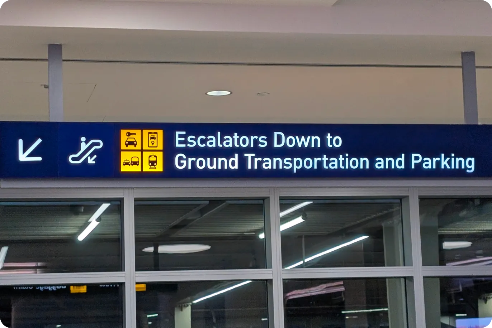
-
Take the escalators down one level.
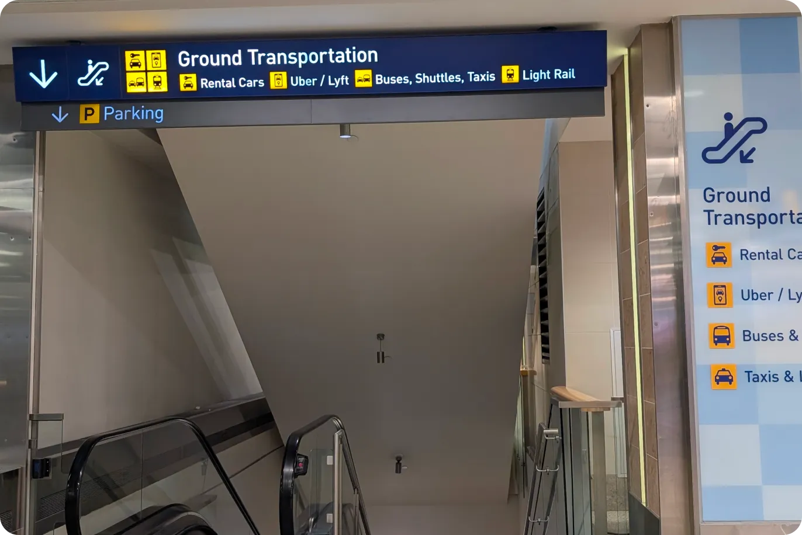
-
Take the elevator that is between both escalators to "T".
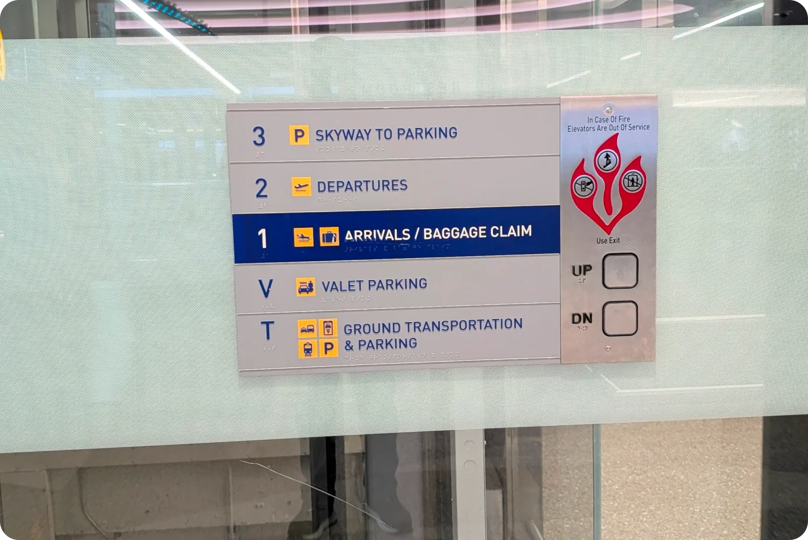
-
Exit the elevator, and follow signs for "Buses/Off-site Parking Shuttles".
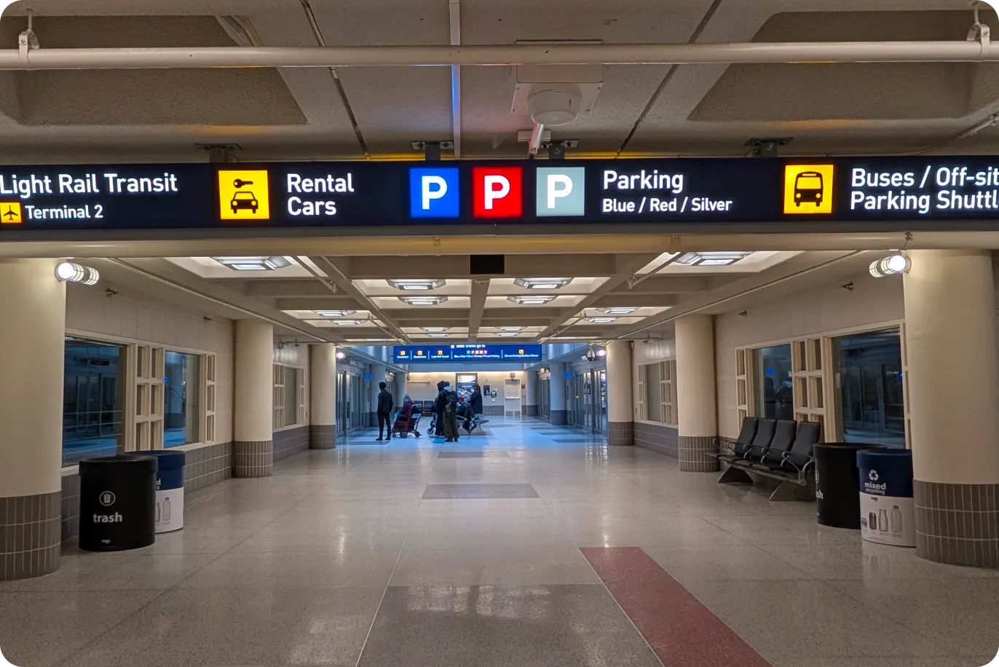
-
Continue straight to take the Tram. The Tram (Level T) is one stop only.
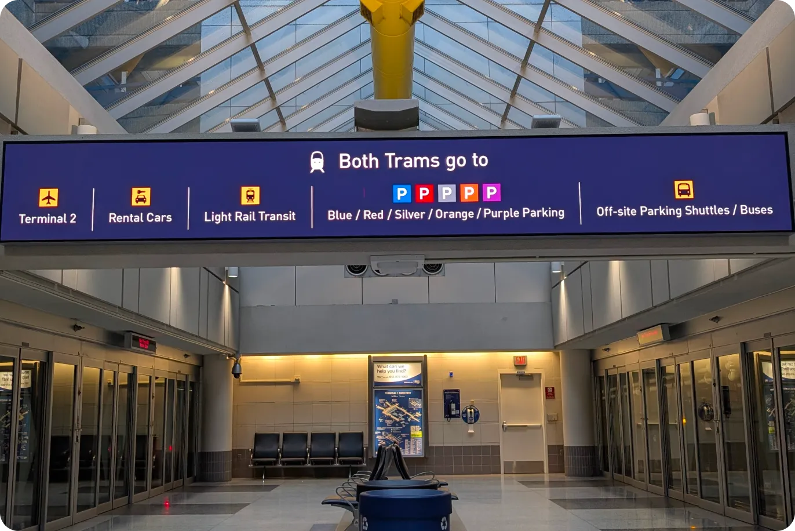
-
Exit the tram and follow signs for silver parking.
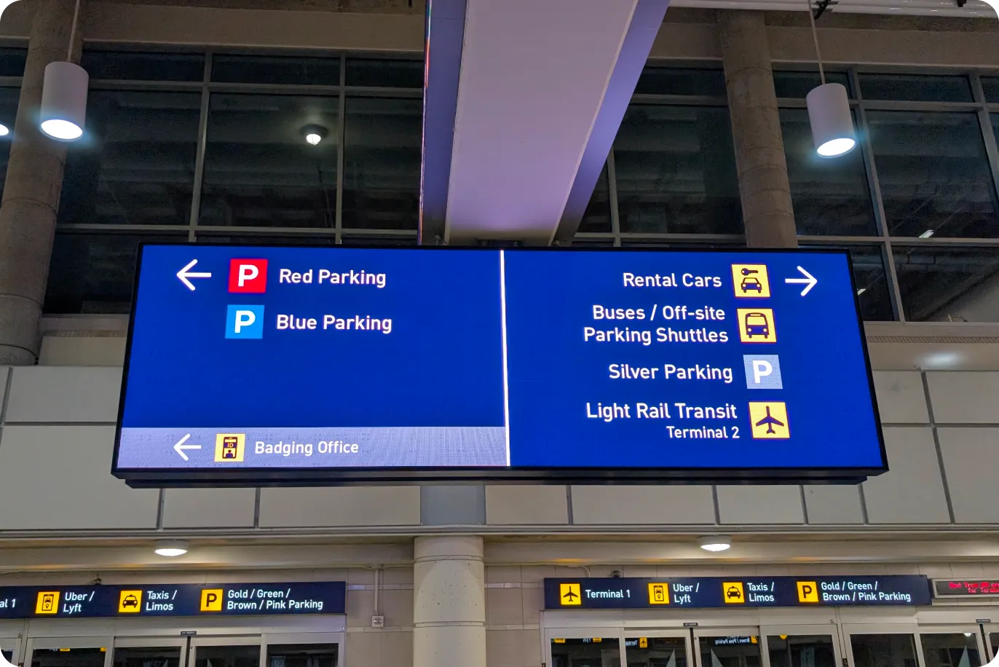
-
Go through the glass doors and take the escalator up, following signs for "Buses/Off-site Parking Shuttles".
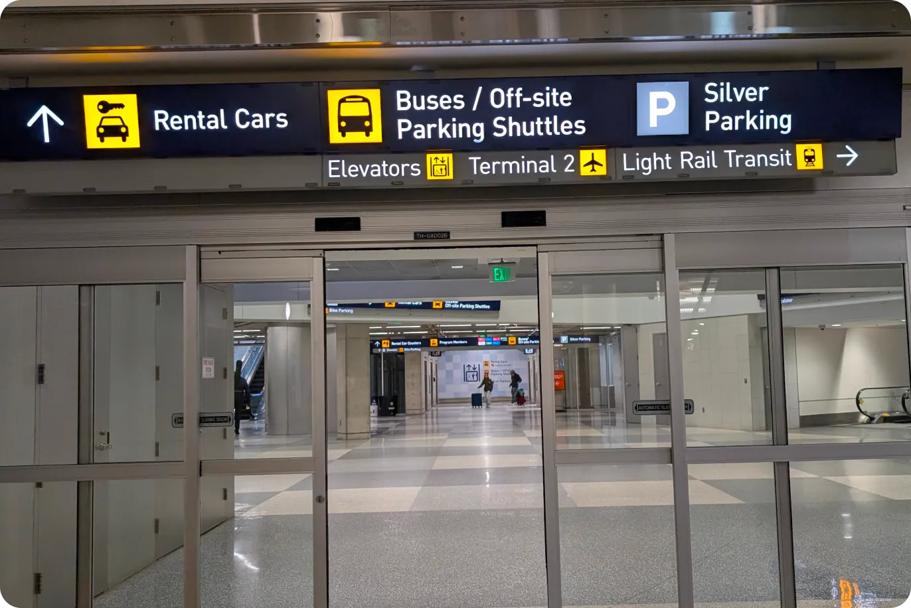
-
Exit the glass doors to the right under the sign saying "Buses".

-
Look for the "Blue Line Express" shuttle bus.
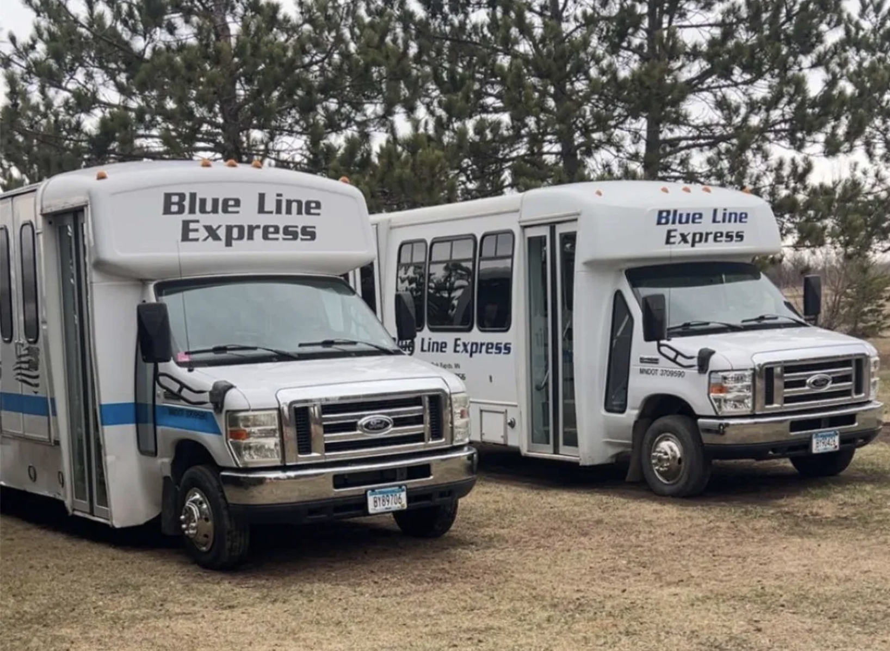
-
From the Baggage Claim, follow signs to “Ground Transportation and Parking”.
-
From Terminal 2
-
From the Baggage Claim, follow signs to Light Rail Transit and go pass check in counter on your left towards the end of the building (Arrivals).
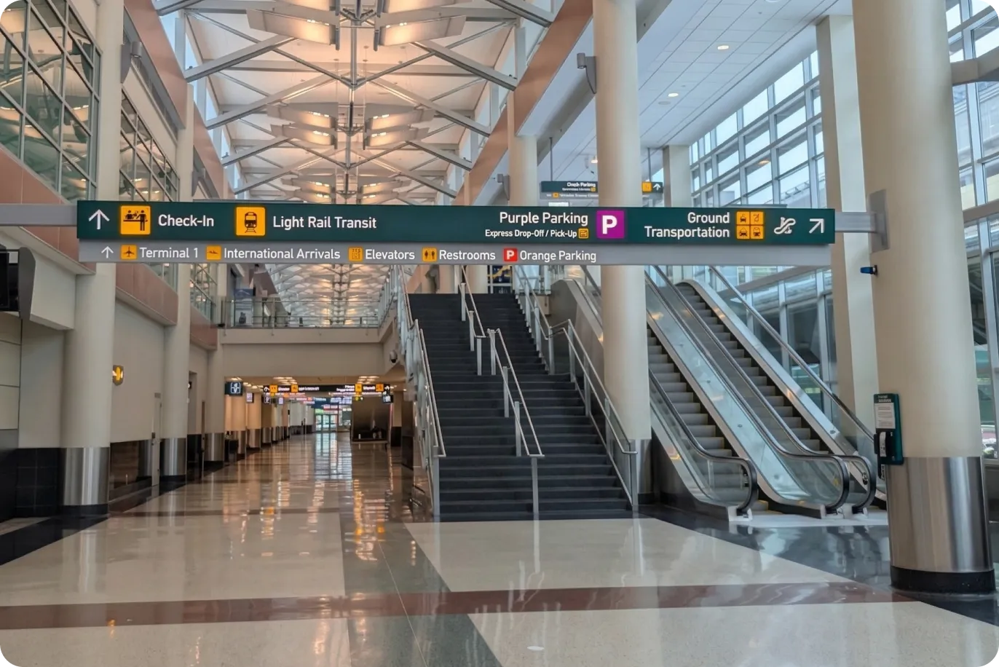
-
Take the elevator or stairs on your right and follow signs to "Gates H Security Check Point 1 Light Rail Transit Terminal 1 / Orange Parking."
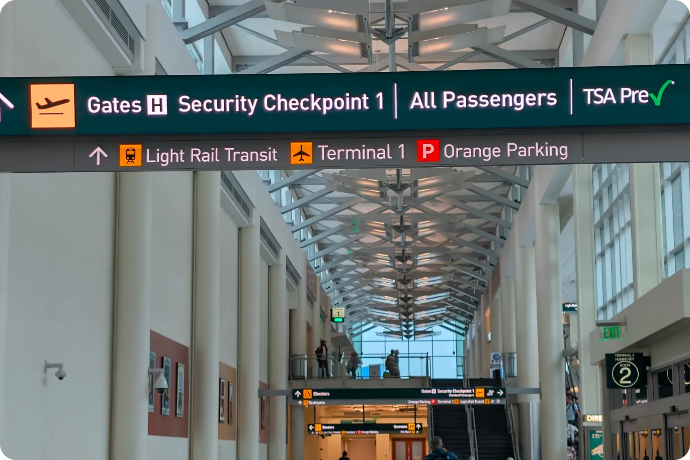
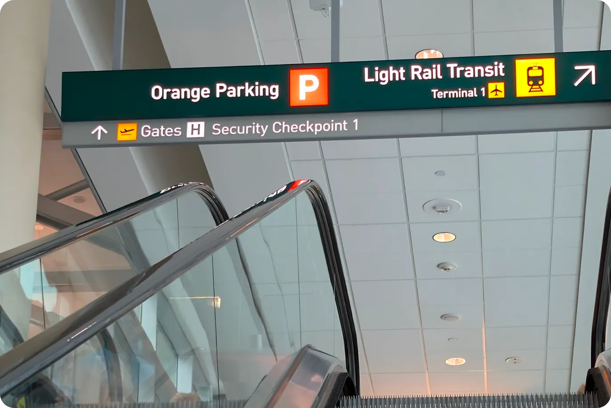
-
Turn right into the skyway, and at the end of the hallway turn left.
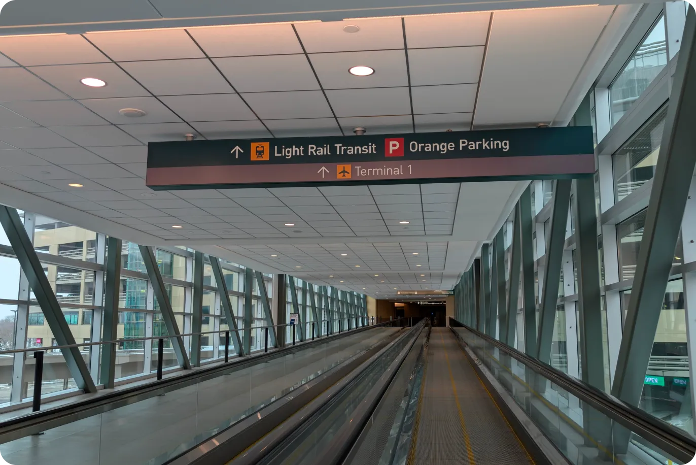
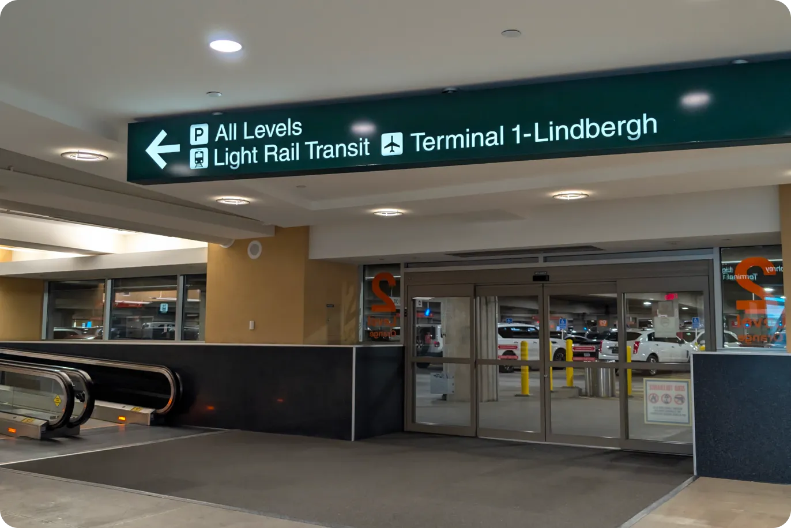
-
At the end of the walkway turn left go down the stairs into the Light Rail Transit Ramp. No fare needed between Terminals.
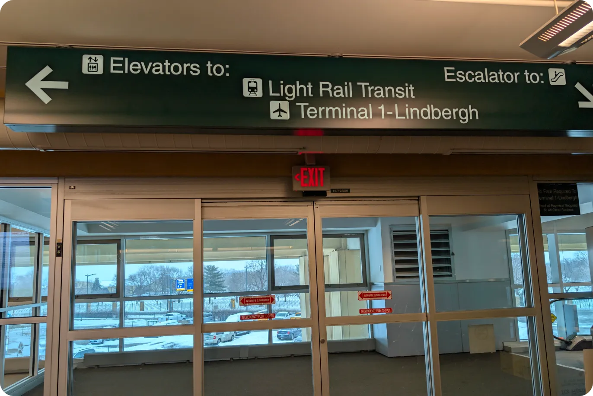
-
Turn left and make sure to look for signs for Terminal Lindbergh / Downtown Minneapolis.
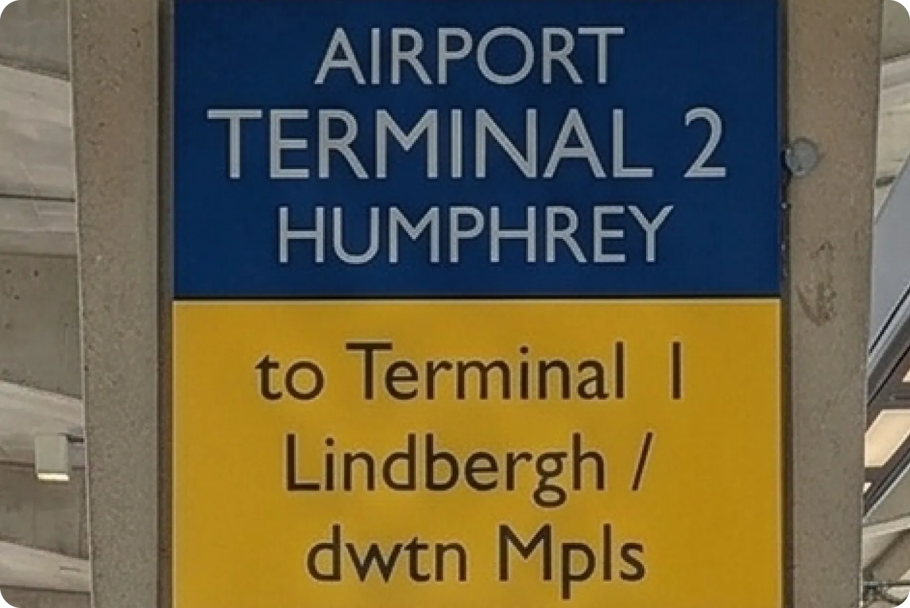
-
Continue straight to take the Tram. The Tram (Level T) is one stop only.
-
Exit the tram and follow signs for silver parking.
-
Go through the glass doors and take the escalator up, following signs for "Buses/Off-site Parking Shuttles".
-
Exit the glass doors to the right under the sign saying "Buses".
-
Look for the "Blue Line Express" shuttle bus.
-
From the Baggage Claim, follow signs to Light Rail Transit and go pass check in counter on your left towards the end of the building (Arrivals).
Contacts
- Gregory: (402)-860-2132
- Jannie: (765)-808-2772
- Shuttle Bus: (218)-255-1956, (218)-955-0251
- Green Valley Resort: (218)-652-3690